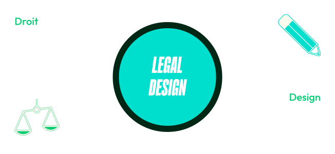

Qu'est-ce que le legal design ?
Le Legal Design c’est appliquer la méthodologie du design thinking à des informations, documents et services juridiques.



Le Legal Design, cela ne se résume pas à des petits dessins!
C’est avant tout une méthodologie qui comprend 5 phases
Il s’agit d’analyser les besoins, contraintes et attentes de l’utilisateur du document ou de la solution
Identifier de manière claire et précise la problématique à laquelle le document ou la solution va répondre
Phase de génération d’idées pour ensuite choisir la meilleure réponse à la problématique choisie
Création d’une première version du document ou de la solution
Tests du prototype auprès de l’utilisateur cible et modifications du prototype après retours d'expériences de l’utilisateur
Nous appliquons la méthode du Legal Design aux projets de lois, procès, actualités liés au droit de l’environnement.
Vous aider à clarifier les enjeux du droit de l'environnement, qu’il s’agisse de projets de lois, procès environnementaux et climatiques, et autre, grâce au design
Vous aider à comprendre ces enjeux de manière ludique !